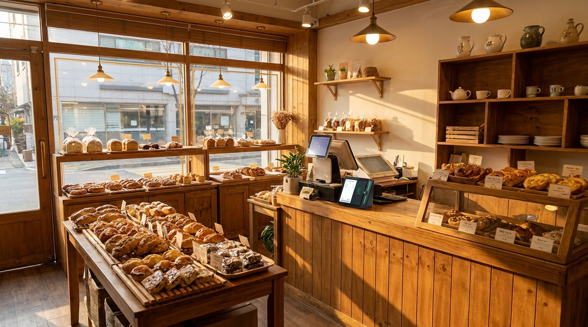
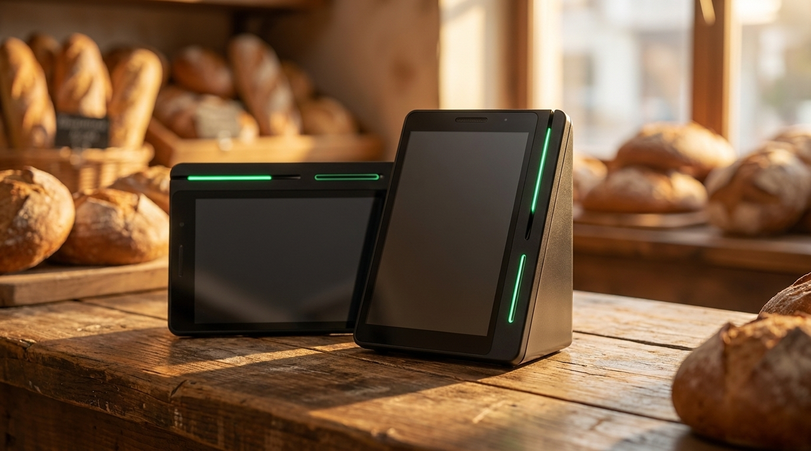
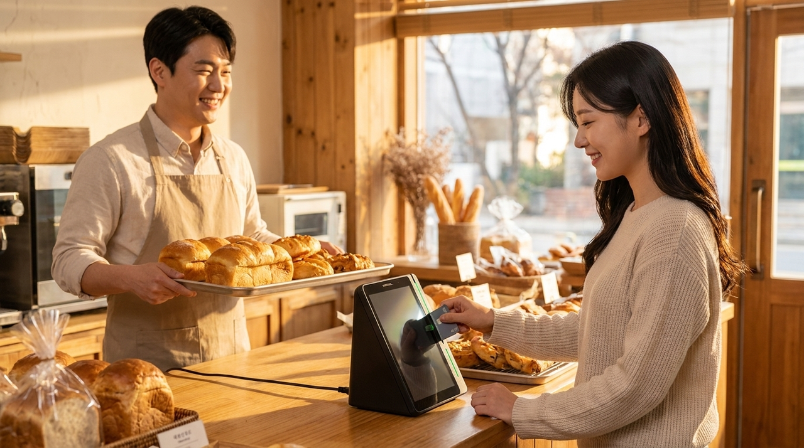

네이버로 들어온 주문과 매장 결제를 한 대에서 받으면 무엇이 달라질까요
동네 빵집에서 가장 바쁜 시간은 빵이 나오는 시간과 손님이 몰리는 시간이 겹칠 때입니다. 그 짧은 시간에 네이버로 들어온 주문을 휴대폰으로 확인하고, 매장 손님 계산도 하고, 포장까지 하려면 손이 모자랍니다. 저희가 수도권 매장을 직접 방문해 설치하면서 본 바로는, 이 시간대의 혼잡은 손님이 많아서라기보다 확인해야 하는 화면이 여러 개라서 생기는 경우가 훨씬 많았습니다. 이 글에서는 온라인 주문과 매장 결제를 한곳에서 처리하면 실제로 무엇이 줄어드는지, 베이커리를 기준으로 정리했습니다.

바쁜 건 손님 수가 아니라 '화면 수' 때문입니다
계산대 앞에 서 있는 손님을 응대하는 동안, 휴대폰에서는 주문 알림이 울립니다. 사장님은 손을 멈추고 화면을 확인하고, 다시 계산으로 돌아옵니다. 이 왕복이 한 번에 몇 초씩이라도 반복되면 줄은 눈에 띄게 길어집니다.
문제는 속도가 아니라 주의가 끊긴다는 점입니다. 계산 중에 다른 화면을 보면 실수가 늘어납니다. 금액을 잘못 누르거나, 들어온 주문을 놓치거나, 포장할 품목을 헷갈립니다. 손님이 많은 날일수록 이 실수의 비용이 커집니다.
그래서 정리의 방향은 단순합니다. 주문이 들어오는 곳과 결제가 이루어지는 곳을 한 자리로 모으는 것입니다. 확인할 화면이 하나면 왕복이 사라지고, 왕복이 사라지면 줄이 짧아집니다.
한곳에 모이면 마감 시간도 같이 줄어듭니다
낮 동안의 편함보다 사장님들이 더 체감하시는 건 마감입니다. 온라인 주문 매출과 매장 결제 매출이 서로 다른 곳에 쌓여 있으면, 하루가 끝난 뒤 두 곳을 각각 열어 더해야 합니다. 숫자가 안 맞으면 처음부터 다시 봅니다.

한 대에서 받으면 매출 내역도 한곳에 모입니다. 어떤 경로로 들어온 매출인지 구분해 볼 수 있으니 "이게 왜 안 맞지" 하고 들여다보는 시간이 사라집니다. 줄어드는 건 결제 시간 몇 초가 아니라, 마감에 쓰던 몇십 분입니다.
여기에 하나 더. 네이버로 매장을 찾아온 손님은 이미 검색을 거쳐 온 손님입니다. 그 손님이 매장에서 다시 결제까지 하면, 방문과 구매가 한 흐름으로 이어집니다. 동네 빵집처럼 재방문이 매출의 큰 부분을 차지하는 업종에서는 이 연결이 특히 의미가 있습니다.
베이커리에서 먼저 확인하면 좋은 것들
| 확인 항목 | 왜 필요한가 |
|---|---|
| 하루 중 가장 몰리는 시간대 | 그 시간에 몇 명이 계산대를 보는지에 따라 구성이 달라짐 |
| 온라인 주문 비중 | 비중이 높을수록 한곳에 모으는 효과가 큼 |
| 포장·픽업 동선 | 계산대와 픽업 자리가 겹치면 줄이 두 배로 보임 |
| 계산대 공간 | 진열대가 넓은 매장은 기기 자리가 의외로 좁음 |
| 현재 쓰는 네이버 서비스 | 이미 쓰고 계신 것이 있으면 그 위에 얹는 편이 빠름 |
| 직원 교대 여부 | 여러 사람이 쓰면 화면이 단순할수록 실수가 줄어듦 |
이 표는 저희가 베이커리 상담에서 실제로 여쭙는 순서와 거의 같습니다. 답을 미리 정리해 두시면 통화 한 번으로 필요한 구성이 나옵니다.

기기를 늘리는 게 아니라 자리를 정리하는 일입니다
상담을 드리다 보면 "그럼 기계를 더 놓아야 하나요"라고 되묻는 분이 계십니다. 대개는 반대입니다. 흩어져 있던 것을 한 자리로 모으는 쪽이라, 계산대가 오히려 단순해집니다. 이미 쓰고 계신 서비스가 있다면 그것을 살리면서 최소한으로 구성하는 방법을 먼저 찾습니다.
저희는 필요 없는 기기를 얹어 드리지 않습니다. 매장 상황을 듣고 지금 쓰는 것 중 남길 것과 정리할 것을 나눈 다음, 꼭 필요한 구성만 제안 드립니다. 수도권은 직접 방문해 계산대 자리를 보고 정합니다.
매장 상황에 따라 구성은 달라집니다
같은 베이커리라도 운영 방식에 따라 필요한 구성이 다릅니다. 아침 일찍 문을 열고 출근길 손님이 대부분인 매장과, 오후에 케이크 예약이 많은 매장은 계산대에서 벌어지는 일이 다릅니다.
출근길 손님이 많은 매장은 한 건이 빨리 끝나는 것이 가장 중요합니다. 손님은 시간이 없고 대개 소액입니다. 이런 매장은 결제 동작을 최대한 단순하게 만들고, 계산대 앞 동선에 걸리는 것이 없도록 정리하는 편이 효과가 큽니다.
반대로 예약과 픽업이 많은 매장은 주문 내용을 확인하는 일이 더 큽니다. 누가 무엇을 언제 찾아가는지, 결제는 언제 이루어졌는지가 헷갈리면 손님과 실랑이가 생깁니다. 이런 매장은 주문과 결제가 같은 자리에서 이어지도록 구성하는 것이 훨씬 도움이 됩니다.
두 가지가 섞인 매장도 많습니다. 그런 경우에는 시간대별로 어떤 손님이 오시는지를 나눠 보고, 더 자주 반복되는 쪽을 기준으로 잡습니다. 저희는 상담에서 "아침과 오후 중 언제가 더 정신없으신가요"를 꼭 여쭙습니다. 이 한 가지 답으로 구성의 방향이 대부분 정해집니다.
빵집은 자리가 좁은 경우가 많아 기기를 늘리기 어렵습니다. 그래서 더더욱 지금 있는 자리를 어떻게 쓰느냐가 중요합니다. 수도권은 직접 방문해 계산대를 보고 정하기 때문에, 도면 없이 사진 몇 장만 보내 주셔도 이야기가 빠르게 진행됩니다.
자주 묻는 질문
Q. 이미 네이버 플레이스를 쓰고 있는데 단말기만 바꾸면 되나요?
현재 쓰고 계신 서비스와 매장 운영 방식에 따라 필요한 구성이 달라집니다. 어떤 서비스를 이용 중이신지 알려 주시면 그에 맞는 최소 구성을 안내해 드립니다.
Q. 온라인 주문이 아직 많지 않은데 미리 준비할 필요가 있을까요?
주문이 늘어난 뒤에 바꾸면 가장 바쁜 시기에 계산대를 손보게 됩니다. 지금 정리해 두면 늘어날 때 그대로 받으면 됩니다.
Q. 직원이 여러 명인데 쓰기 어렵지 않을까요?
화면이 하나로 모이면 오히려 배우기 쉬워집니다. 설치 때 매장에서 함께 한 번 눌러 보시면 대부분 그 자리에서 익숙해지십니다.
Q. 비용은 어떻게 되나요?
매장 구성과 필요한 기기에 따라 달라지므로 상담 시 직접 공급가로 안내해 드립니다. 네이버단말기는 약정 없이 이용하실 수 있습니다.
손이 모자란 시간은 사람이 아니라 구조의 문제입니다
빵이 나오는 시간과 손님이 몰리는 시간은 앞으로도 겹칩니다. 그 시간에 사장님이 화면을 몇 번 왕복하는지는 바꿀 수 있습니다. 하루 중 가장 바쁜 시간대와 지금 쓰고 계신 서비스만 알려 주시면, 계산대를 어떻게 정리하면 좋을지 함께 찾아 드리겠습니다. 정품 신제품 보증에 수도권 직영 설치로 방문해 드립니다.
- 📞 전화상담 1544-7754
- 🌐 홈페이지 https://nwpos.co.kr

📷 인스타그램 팔로우 https://www.instagram.com/nurinetworkspos

▶️ 유튜브 구독 https://www.youtube.com/@nurinetworks